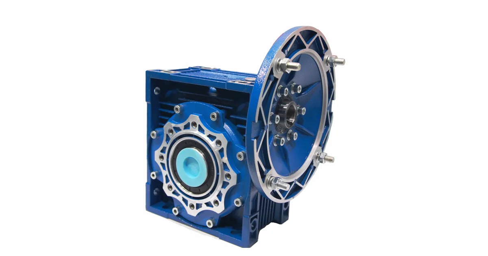

Собственное производствоПромышленные редукторы для производителей оборудования•Отгрузка по всей России•Аналоги SEW, NORD, Bonfiglioli без переделки рамы•Расчёт и КП за 15 минут•Гарантия 36 месяцевПромышленные редукторы для производителей оборудования•Отгрузка по всей России•Аналоги SEW, NORD, Bonfiglioli без переделки рамы•Расчёт и КП за 15 минут•Гарантия 36 месяцев
Главная›Блог›Монтаж редуктора Guomao: соосность, затяжка и первый пуск
Эксплуатация
Монтаж редуктора Guomao: соосность, затяжка и первый пуск
Опыт инженеров Завода Редукторов · чтение ~10 минут
Отказ редуктора Guomao чаще приходит не из цеха, а с монтажной площадки: перекос, недотянутый болт и оставленная транспортная пробка съедают ресурс подшипников раньше расчётного срока. Ниже — порядок операций, который снимает эти риски до первого включения. Разбор привязан к линейке Guomao серий R, K, F, S и к тому, как по ней подбирается наш ZR.
Сразу о главном. Готовой таблицы перехода «типоразмер Guomao → типоразмер ZR» мы не публикуем, и вывести её из китайского каталога напрямую нельзя: совпадение момента не означает совпадения посадок, а присоединительные и габаритные размеры у разных серий свои. Поэтому по Guomao подбор ведёт инженер — по шильду, фотографии узла или габаритному чертежу, а наш редуктор ZR считается под конкретную задачу.
Границы линейки: что именно приехало из Китая
Начинать нужно с шильда, а не с осмотра корпуса. Редуктор Guomao маркируется с указанием серии, передаточного числа и монтажного положения, под которое он заправлен маслом. Для линеек, которые идут к нам, это R, K, F, S — у каждой своя геометрия корпуса и свои присоединительные размеры, поэтому переносить данные с одной серии на другую нельзя.
Если положение на шильде не совпадает с фактическим положением на раме, заправленный объём масла перестаёт соответствовать рабочему. Менять положение на объекте без пересчёта уровня нельзя — это прямой путь к масляному голоданию или вспениванию.
Приёмка до такелажа
Проверните входной вал рукой: вращение должно быть ровным, без закусываний и хруста. Осмотрите манжеты на подтёки, проверьте, что сапун не залеплен краской и не закрыт транспортной пробкой — после пуска это выдавливает масло через уплотнение.
Отдельно сверьте механику с местом установки: диаметр выходного вала, шпоночный паз, диаметр и толщину фланца, расположение и диаметр отверстий под лапы. Именно эти размеры решают, встанет ли редуктор на существующую раму при замене на аналог ZR.
Признак на монтаже, причина и действие
Что видно
Причина
Действие
Масло под манжетой после пуска
Не снята транспортная пробка, не поставлен сапун
Заменить пробку на сапун до пуска
Отклонение уровня масла от метки
Монтажное положение не совпадает с заказанным
Сверить с шильдом, при смене пересчитать объём
Вибрация и нагрев подшипников
Соосность выставлена на глаз
Измерить индикаторами или лазером в четырёх точках
Шум после посадки на вал
Редуктор набит ударами
Ставить съёмником или стяжной шайбой
Трещина по проушине корпуса
Жёсткая торсионная опора
Сделать опору податливой в одном направлении
Ослабленный крепёж через несколько часов
Стыки примялись, протяжка не делалась
Провести контрольную протяжку после обкатки
Плита, фланец и посадка
Опорная поверхность должна быть жёсткой и плоской. Неплоскостность выбирают подгонкой прокладок, а не затяжкой болтов: подтягивая корпус к кривой плите, вы закладываете в него постоянное напряжение, которое первыми чувствуют подшипники выходного вала. На лапах проверяют прилегание всех опор щупом при незатянутом крепеже, во фланцевом исполнении — перпендикулярность привалочной плоскости к оси вала машины.
Насадные исполнения с полым валом ставят по посадке с зазором, фиксируют стяжной шайбой или шпонкой и никогда не набивают ударами: ударная нагрузка проходит через подшипники и оставляет бринеллирование на дорожках, которое всплывёт шумом через месяцы. Вал очищают, снимают заусенцы, наносят тонкий слой монтажной пасты, а не консистентной смазки. Стяжную шайбу тянут крест-накрест в несколько проходов паспортным моментом.

Редуктор Guomao: червячный исполнение
Соосность по муфте, а не по кожуху
Смещение выставляют по муфте: радиальное и угловое — индикаторами или лазером в четырёх положениях через 90°. Допуск берут из паспорта муфты, он всегда жёстче ожидаемого — для упругой втулочно-пальцевой речь идёт о сотых миллиметра, а не о десятых.
Тепловое расширение учитывают заранее: привод, выставленный в ноль на холодную, на рабочей температуре уходит вверх. Для машин с заметным нагревом соосность выставляют с преднамеренным вертикальным смещением, которое подбирают при выходе на режим. Реактивный момент насадного редуктора воспринимает торсионная опора, податливая в одном направлении: жёстко приваренный упор превращает корпус в силовой элемент рамы и ломает его.
Сборка и монтаж привода
Крепёж, пуск и контрольная протяжка
Затяжка от руки до упора — типовая причина ослабления крепления через несколько недель. Крепёж тянут регламентированным моментом по классу прочности, а точные значения берут из паспорта конкретного изделия, а не из памяти монтажника.
Первый пуск делают без нагрузки или на минимальной. Слушают зацепление: ровный шум — норма, периодический стук или меняющий тон вой — повод остановиться. Через короткое время работы проверяют температуру корпуса на ощупь и отсутствие подтёков по манжетам и разъёму.
На рабочую нагрузку выводят ступенями. Рост температуры в первые часы и последующая стабилизация — нормальный процесс; тревожно, если температура не выходит на полку. После обкатки крепёж перетягивают: стыки приминаются, и момент затяжки падает.
Какие данные собрать перед заказом
Что нужно инженеру для подбора и где это взять
Параметр
Где взять
Зачем нужен
Полное обозначение с шильда
табличка на корпусе редуктора
определяет серию Guomao и типоразмер
Мощность и обороты двигателя
шильд двигателя или паспорт привода
задаёт входную ступень и запас
Обороты на выходе
технолог или расчёт по механизму
через них считается передаточное число
Монтажное положение
по факту установки на объекте
определяет уровень масла и расположение пробок
Присоединительные размеры
замер или габаритный чертёж
главное условие взаимозаменяемости
Характер нагрузки и режим
технолог, паспорт механизма
через него выбирается сервис-фактор
Доставка, оплата и гарантия
Отгружаем по всей России транспортными компаниями, самовывоз — со склада в Челябинске. Оплата по счёту для юридических лиц, для новых клиентов возможна частичная предоплата. На изделия собственного производства ZR даём гарантию 36 месяцев и передаём паспорт с фактическими параметрами. Условия и сроки — на страницах доставки и цен: конкретную стоимость называем после подбора, потому что она зависит от исполнения, передаточного числа и комплектации двигателем.
Не уверены в подборе? Пришлите фото шильдика на zr@zavod-red.ru — инженер прочитает обозначение, сверит присоединительные размеры и пришлёт расчёт. Или соберите вариант сами в калькуляторе подбора: там задаются диапазоны по мощности, оборотам, моменту и передаточному числу.
Частые вопросы
Нужно ли менять масло сразу после монтажа редуктора Guomao?
Нет, если он пришёл заправленным под ваше монтажное положение. Если положение на объекте другое, уровень масла пересчитывают до пуска.
Можно ли подобрать ZR только по крутящему моменту из каталога Guomao?
Нет. Совпадение момента не гарантирует совпадения присоединительных и габаритных размеров, а именно они определяют установку на существующую плиту.
Чем выставлять соосность — индикатором или лазером?
Подойдёт любой из способов. Измерения делают в четырёх положениях через 90°, допуск берут из паспорта муфты.
Как ставить редуктор с полым валом на вал машины?
По посадке с зазором, фиксируя стяжной шайбой или шпонкой. Удары и набивка запрещены, паста наносится тонким слоем.
Почему после первых часов работы требуется протяжка крепежа?
Стыки приминаются, момент затяжки падает. Без контрольной протяжки возможно ослабление крепления и разбивание отверстий.
Что должно насторожить на первом пуске?
Периодический стук или меняющий тон вой, а также температура, которая не стабилизируется на рабочем режиме.